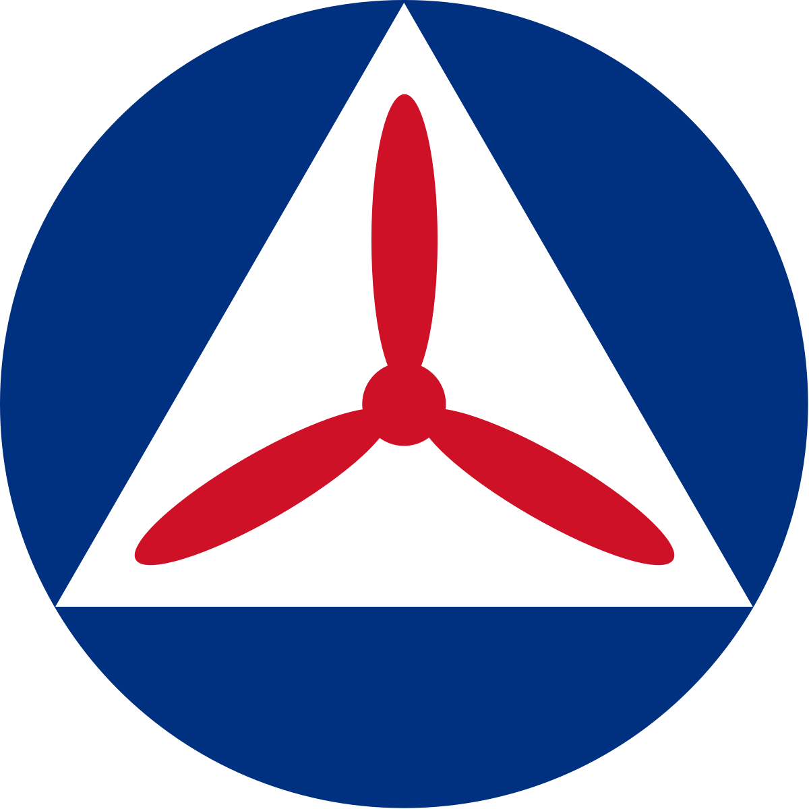

NORTHEAST REGION DISCORD TEST SERVER
Developing Dynamic Americans Through Cyber Power The Northeast Region Discord is the official server and socialization platform for one of the eight regions of the Civil Air Patrol, the United States Air Force Auxiliary.
JOIN SERVER